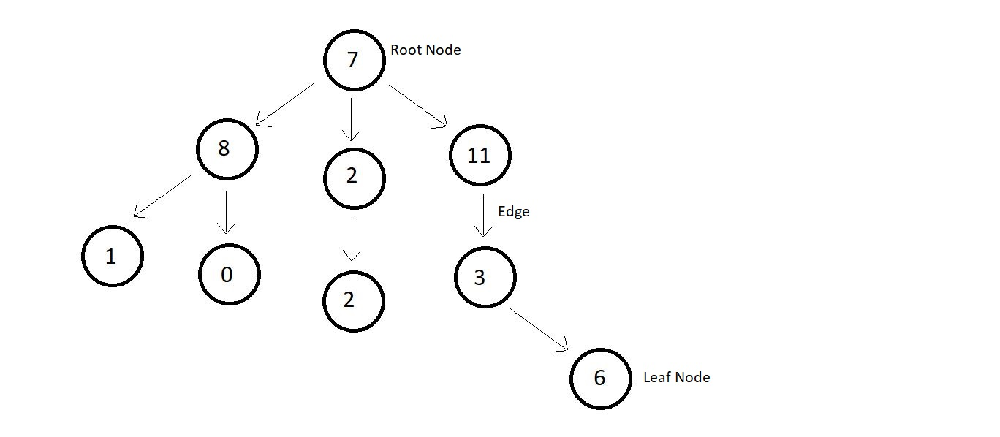
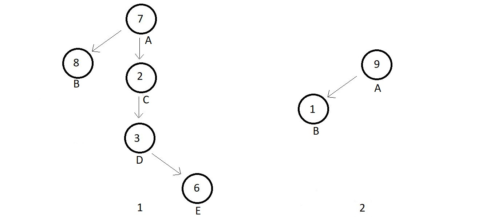

What is a Binary Tree
Quick revision
- A tree is made up of nodes and edges.
- The topmost node is called the node which points to another node, is the parent of that node
and the node which the parent is pointing at is the child of that parent node. And nodes
having the same parents are called siblings of each other.
- Nodes having zero children are the leaf nodes/external nodes, and nodes having at least one
child are the internal nodes
- Ancestors of a node are the nodes accessible by traversing upwards along the edges. They are
either the parents or the parents of the parents.
- Descendansts of node are the nodes accessible by traversing downwards along the edges. They
are either the children or the children of the children
- Height of a node is the number of edges in between the deepest leaf and that node. And
depth of a node is the number of edges between the root and that node.
Additional points
- A tree with n nodes have n-1
-
In a tree, there is one and only edge correspoinding to all the nodes except the root node.
The root node has no parent, hence no edge pointing to it. Therefore, a total of n-1 edges.
- The degree of node in a tree is the number of children of a node.
- The degree of tree is the ighest degree of a node among all the nodes present in the
tree.
- 
- In the above tree, the number of nodes is 9, and hence the number of edges are 8.
- Highest degree of a node is that of the root node, which has 3 children. Hence, the degree of the
tree is also 3.
Binary Tree
A binary tree is a special type of tree where each node has a degree equal to or less than two which means each node should have at most two children

Example 1 has nodes A, B, C, D, E with degrees (2, 0, 1, 1, 0) respectively which satisfies the conditions for a binary tree. Similarly, example 2 has nodes A and B, having degrees 1 each, hence a binary tree.